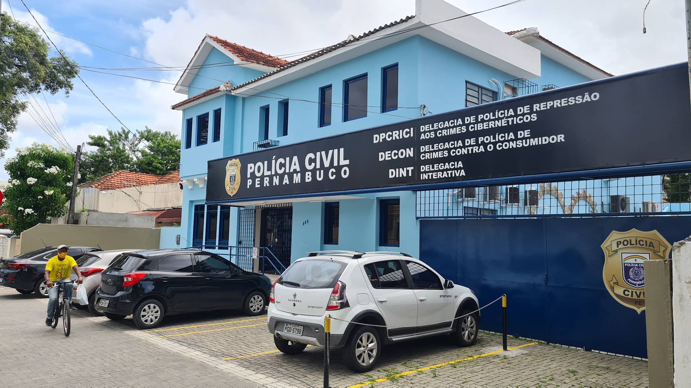

Como o órgão oficial não possui um site próprio detalhado, reunimos aqui todas as informações essenciais para você encontrar a delegacia especializada de Pernambuco.
A DPCRICI é a unidade da Polícia Civil de Pernambuco focada exclusivamente em investigar crimes cometidos no ambiente digital. Isso inclui fraudes bancárias (golpes do PIX), clonagem de WhatsApp, extorsão, invasão de dispositivos e furto de dados.
Endereço:
Rua Gervásio Pires, nº 863
Bairro da Boa Vista (área central)
Recife / PE - CEP: 50050-070
Telefones:
(81) 3184-3206 / 3184-3207
E-mail:
dpcrici@policiacivil.pe.gov.br

Prepare-se antes de ir presencialmente à delegacia para garantir
que sua denúncia seja registrada com sucesso.
Se possível, registre a ocorrência na Delegacia Pela Internet antes de ir presencialmente. Isso adianta o trabalho dos escrivães e agiliza seu processo.
Não confie apenas em mostrar o celular. Leve os prints de conversas, comprovantes de PIX e informações do golpista já impressas para anexar ao inquérito.
Para falar diretamente com os investigadores da unidade especializada, dê preferência ao horário comercial (de segunda a sexta-feira, das 8h às 18h).